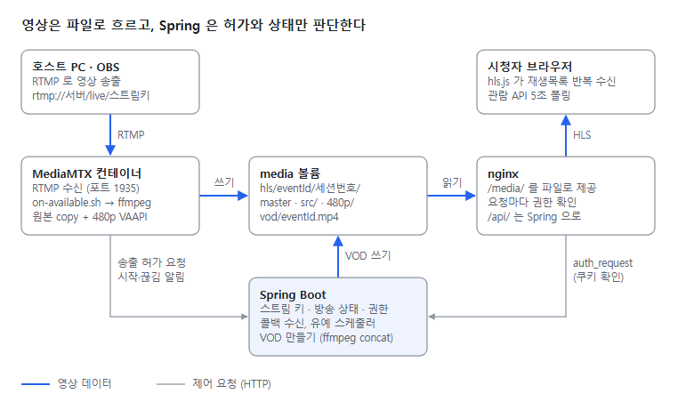
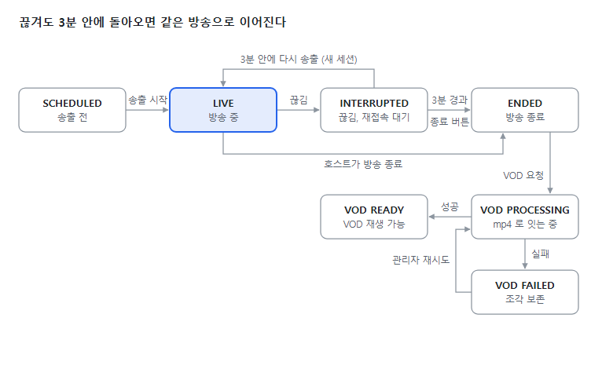

[podoR] 4. 백엔드 스트리밍 구조 및 흐름 정리하기
서론
최근 podoR에 추가한 스트리밍 기능에 대해, 대략적인 구조와 그 흐름을 정리하고자 한다.
- 11월 19일 업데이트)
ffmpeg에서원본 화질의BANDWIDTH인식할 수 있게 명시적으로 비트레이트 지정한 내용을 추가했다.
아키텍처
송출자의 스트리밍부터, 이를 서버에서 처리하고 수신자에게 전달하기 까지의 흐름을 구성하는 요소는 다섯가지이다.

- 송출자(Host) PC
OBS Studio등의 프로그램을 이용해,RTMP프로토콜로 영상을 전송한다.
MediaMTX컨테이너- 송출자의
RTMP데이터를 받는 미디어 서버. 송출이 시작될 때, 끝날 때 스크립트를 실행한다.
- 송출자의
ffmpegMediaMTX컨테이너와Spring컨테이너 두 곳에서 사용된다.MediaMTX컨테이너에서는RTMP데이터를HLS파일로 바꾼다.Spring컨테이너에서는HLS 조각(.ts)을VOD(mp4)로 조합한다.
Spring컨테이너스트림 키,방송 상태,관람 권한등 스트리밍 서비스과 관련된 요소들을 처리한다.
nginx컨테이너HLS파일을 정적 파일로 제공하되, 요청마다사용자의 권한을Spring 컨테이너로부터 확인 받는다.
구성을 보면 알 수 있듯 영상 데이터는 Spring 서비스를 거치지 않으며, 송출 허가 요청, 영상 파일 접근 권한 확인 등의 짧은 HTTP 요청만 처리한다.
(다만, 스트림이 종료된 뒤에는 이를 감지해 디스크에 남은 HLS 조각들을 합쳐 VOD를 만든다.)
흐름
1. 스트림 키 발급
호스트가 스트림 관리 페이지(/host/events/{eventId}/stream)에 진입할 경우, 스트림 키 조회 API(GET /host/events/{eventId}/stream)가 호출된다.
이 API는 해당 이벤트의 소유자(HOST)와 관리자(ADMIN)만 호출할 수 있도록 설정되어 있다.
// StreamHostController
@GetMapping("/stream-key")
@PreAuthorize("@eventSecurity.isOwner(#eventId) or hasRole('ADMIN')")
public ResponseEntity<StreamKeyResponse> getStreamKey(@PathVariable String eventId) {
...
}
만약 키가 아직 없다면, 즉석에서 만들어서 event.stream_key 컬럼으로 저장한다.
(JPA의 더티 체킹으로 인해 자동으로 update 쿼리 호출)
private static String newKey() {
byte[] bytes = new byte[32];
RANDOM.nextBytes(bytes);
return Base64.getUrlEncoder().withoutPadding().encodeToString(bytes);
}
키 값은 의미없는 Base64 포맷의 43자짜리 키로, 발급해도 DB에 등록되는 것 말고는 별도의 이벤트는 발생하지 않는다.
MediaMTX 컨테이너는 "^live/(.+)$" 경로(즉, live/*)에 대해 받을 준비만 해놓고, 실제로 요청이 들어오면 /scripts/on-ready.sh에 작성된 로직대로 Spring 서버에 ‘이 스트림 키가 유효한가’를 질의한다. (POST /api/internal/stream/started)
정확히는, 해당 스트림 키를 갖는 Event를 찾는 질의를 통해 유효성을 검증함.
StreamLifecycleService.started에서findByKey를 호출.
# on-available.sh
KEY="${MTX_PATH#live/}"
# -f: 응답 코드 400인 경우 오류 코드 22와 함께 응답 본문이 전혀 출력되지 않도록 설정
# -s: silent mode. 진행률 표시기, 참고 메시지, 경고 등을 표시하지 않음
# -S: 오류 표시. -s와 함께 사용시 curl이 실패할 경우 오류 메시지 표시
RESP=$(curl -fsS --retry 10 --retry-delay 3 --retry-all-errors -X POST \
-H "X-Internal-Token: ${STREAM_INTERNAL_TOKEN}" \
-H "Content-Type: application/json" \
-d "{\"streamKey\":\"${KEY}\"}" \
"${SPRING_URL}/api/internal/stream/started")
# 위 경로로 요청을 보낸 결과를 표준 출력으로 출력한 뒤, 그 값을 인자로 받아
# jq(명령줄 기반의 JSON 프로세서)로 JSON 문자열 대신 표준 출력으로 직접 출력되도록 함
# 그리고 그 중 키 [outputDir]의 값을 OUT이라는 변수에 할당
OUT=$(printf '%s' "$RESP" | jq -r .outputDir)
# -p: 경로에 있는 상위 디렉터리가 없는 경우 해당 디렉터리와 함께 상위 디렉터리를 생성하고, 디렉터리가 이미 존재해도 오류 발생시키지 않음
mkdir -p "$OUT/src" "$OUT/480p"
키는 노출될 경우, POST /stream-key/reissue API를 통해 재발급 할 수 있으며, 방송중일 경우(LIVE | INTERRUPTED) 이러한 재발급은 409 Conflict로 실패한다.
‘동일한
스트림 키로 송출 중단 후 재송출’ 동작을 지원하기 위해서는 기존 키로 재접속 할 수 있어야 하기 때문
outputDir은 StreamProperties에 설정된 mediaRoot + /hls/ + event.getEventId() + / + sessionNo
2. 호스트가 송출한 미디어 수신하기
호스트 측에서 OBS Studio와 같은 툴을 이용해 스트림을 시작하면, 프로그램은 rtmp://<서버 주소>:1935/live/<스트림 키>로 접속한다.
1935번 포트는 전통적으로 Adobe Flash를 비롯한 애플리케이션에서 RTMP 통신을 위해 사용됨
이 통신은 nginx를 거치지 않고 바로 MediaMTX 컨테이너로 전송된다.
# mediamtx.yaml
# RTMP 수신만 받도록 하고, 나머지는 비활성화한다.
rtmp: yes
rtsp: no
hls: no
webrtc: no
srt: no
moq: no # v1.21부터 기본으로 켜지는 MoQ 서버는 사용하지 않을 예정이므로 비활성화
authMethod: http # 허가 판단을 HTTP 로 밖에 맡긴다
authHTTPExclude:
- action: api
- action: metrics
- action: pprof
그리고 HLS을 제공하는 역할은 nginx에서 수행하도록 할 것이기 때문에, MediaMTX에서는 클라이언트측으로 출력하지 않고, RTMP 수신만 하도록 설정했다.
또한, 인증을 활성화하되(authMethod), 외부 HTTP 서버(즉, Spring 서버)를 통해 진행하도록 했다.
따라서, MediaMTX에서는 새 연결 요청이 들어올 때 마다 authHTTPAddress로 설정된 주소로 인증을 요청한다. 참고 - mediaMTX Configuration
# ...
MTX_AUTHHTTPADDRESS: http://spring:8080/api/internal/stream/publish-auth?token=${STREAM_INTERNAL_TOKEN}
이때, 이
authHTTPAddress는docker-compsoe.yml에서MTX_AUTHHTTPADDRESS라는 환경변수로 주입한다.
{ "action": "publish", "path": "live/<스트림 키>", "ip": "100.x.x.x", "protocol": "rtmp", ... }
해당 URL로 MediaMTX는 다음과 같은 포맷(참고)의 JSON을 POST 요청으로 전송하며, 응답 코드가 2XX이면 허가, 그 외에는 연결을 끊는다.
// StreamInternalController.java
@PostMapping("/publish-auth")
public ResponseEntity<Void> publishAuth(@RequestBody PublishAuthRequest request) {
boolean allowed = lifecycleService.authorize(request, LocalDateTime.now());
return ResponseEntity.status(allowed ? HttpStatus.OK : HttpStatus.UNAUTHORIZED).build();
}
// StreamLifecycleService.java
@Transactional(readOnly = true)
public boolean authorize(PublishAuthRequest req, LocalDateTime now) {
if ("read".equals(req.action())) {
return LOOPBACK.contains(req.ip());
}
if (!"publish".equals(req.action())) {
return false;
}
// (1) 회차 조회
Optional<Event> found = keyOf(req.path()).flatMap(eventRepository::findByStreamKeyAndDeletedDateIsNull);
if (found.isEmpty()) {
return false;
}
Event event = found.get();
// (2) 스트리밍 상태 검사(PUBLISHABLE = `SCHEDULED`, `LIVE`, `INTERRUPTED`로 이뤄진 EnumSet)
return PUBLISHABLE.contains(event.effectiveStreamStatus())
// (3) 송출 가능 시간 정책 검사
&& publishPolicy.allows(event, now)
&& eventRepository.countByStreamStatusInAndSeqNot(ACTIVE, event.getSeq()) < props.maxConcurrent();
}
그리고 Spring 서버의 POST api/internal/stream/publish-auth에서는 4가지 요소를 모두 만족할 경우만 200 응답을 돌려준다.
json의path에서live/를 떼고 남은스트림 키로 삭제되지 않은 회차가 있는지 (findByStreamKeyAndDeletedDateIsNull)- 해당 회차의 스트리밍 상태가
SCHEDULED,LIVE,INTERRUPTED중 하나인지 - 송출 가능 시간 정책(
StreamPublishPolicy)을 통과하는지
현재 구현에서는 항상 통과하도록 설정함
- 해당 회차를 제외하고 지금 송출중인 회자의 수가
stream.max-concurrent(props.maxConcurrent) 미만인지
현재 테스트중인 서버에서는 성능이 좋지 않아 동시 방송을 셋으로 제한함
또한, MediaMTX 이외의 외부에서 /api/internal로 접근하지 못하도록 nginx에서 404로 막도록 처리하며, Spring의 InternalTokenInterceptor를 통해 요청이 진짜 MediaMTX로부터 온 것인지 검사하기 위한 값(X-Internal-Token)을 검사토록 함.
이를 통해 외부로부터의 접속 차단은 물론, 내부 도커 네트워크의 컨테이너가 임의로 접근하는 경우도 차단함
3. 영상 처리 - MediaMTX 훅 스크립트
# mediamtx.yml
paths:
# 송출자의 {rtmp://<host>/live, 스트림 키 {key}} -> path로 변환시 `live/{key}`
"~^live/(.+)$":
# 송출이 시작되면 Spring 서버에 세션을 만들고 `ffmpeg`를 이용해 HLS 출력을 생성한다(스크립트가 ffmpeg 로 exec).
# (1.21 에서 runOnReady/runOnNotReady 가 runOnAvailable/runOnUnavailable 로 이름이 바뀌었다)
runOnAvailable: /scripts/on-available.sh
runOnAvailableRestart: no
# 송출이 끊기면 Spring 에 알린다(INTERRUPTED, 유예 시간 뒤 종료 확정).
runOnUnavailable: /scripts/on-not-available.sh
허가를 받은 받은 송출이 들어오기 시작하면, MediaMTX는 해당 path를 사용 가능(available)로 표시한 뒤, 설정된 훅을 실행한다.
# on-available.sh
KEY="${MTX_PATH#live/}"
# -f: 응답 코드 400인 경우 오류 코드 22와 함께 응답 본문이 전혀 출력되지 않도록 설정
# -s: silent mode. 진행률 표시기, 참고 메시지, 경고 등을 표시하지 않음
# -S: 오류 표시. -s와 함께 사용시 curl이 실패할 경우 오류 메시지 표시
# Spring 서버가 재기동중 일 수 있는 상황을 고려해 3초 간격으로 10번까지 재시도한다.
RESP=$(curl -fsS --retry 10 --retry-delay 3 --retry-all-errors -X POST \
-H "X-Internal-Token: ${STREAM_INTERNAL_TOKEN}" \
-H "Content-Type: application/json" \
-d "{\"streamKey\":\"${KEY}\"}" \
"${SPRING_URL}/api/internal/stream/started")
# 위 경로로 요청을 보낸 결과를 표준 출력으로 출력한 뒤, 그 값을 인자로 받아
# jq(명령줄 기반의 JSON 프로세서)로 JSON 문자열 대신 표준 출력으로 직접 출력되도록 함
# 그리고 그 중 키 [outputDir]의 값을 OUT이라는 변수에 할당
OUT=$(printf '%s' "$RESP" | jq -r .outputDir)
# -p: 경로에 있는 상위 디렉터리가 없는 경우 해당 디렉터리와 함께 상위 디렉터리를 생성하고, 디렉터리가 이미 존재해도 오류 발생시키지 않음
mkdir -p "$OUT/src" "$OUT/480p"
Spring 서버에 스트리밍 시작을 알리고, 출력 폴더를 받아온다.public StreamStartedResponse started(String streamKey, LocalDateTime now) { Event event = findByKey(streamKey); // 1. 방송 상태를 `LIVE`로 바꾼다. (조건부 상태 전이) int changed = eventRepository.transitStreamStatus(event.getSeq(), STARTABLE, true, StreamStatus.LIVE); if (changed == 0) { throw new ResponseStatusException(HttpStatus.CONFLICT, "송출을 시작할 수 없는 상태입니다."); } // 2. 직전 세션이 있는지 조회한다. Optional<StreamSession> previous = sessionRepository.findTopByEvent_SeqOrderBySessionNoDesc(event.getSeq()); // 만약 있다면, 닫는다. (`stopped`가 유실된 이전 세션은 지금 끊긴 것으로 닫는다) previous.ifPresent(s -> s.end(now)); // 3. stream_session에 새 행(session_no의 경우, 직전의 값에 1을 추가한 값)을 만든다. int sessionNo = previous.map(s -> s.getSessionNo() + 1).orElse(1); sessionRepository.save(StreamSession.start(eventRepository.getReferenceById(event.getSeq()), sessionNo, now)); // 4. 출력 폴더 `/media/hls/{eventId}/{sessionNo}`를 응답으로 돌려준다. String outputDir = props.mediaRoot() + "/hls/" + event.getEventId() + "/" + sessionNo; return new StreamStartedResponse(event.getEventId(), sessionNo, outputDir); }POST /api/internal/stream/started에 위와같이streamKey를 전송하면,Spring 서버는 하나의 트랜잭션 안에서 다음과 같이 로직을 처리한다.
인코더를 선택한다.# Intel GPU(i915/xe(Tigerlake 이후 플랫폼의 그래픽 드라이버)) 렌더 노드를 찾는다. 다른 GPU(예: NVIDIA)가 함께 있으면 renderD128 이 Intel 이 # 아닐 수 있고, 번호는 부팅마다 동적할당되기 때문에, 바뀔 수 있다. 사용자가 `STREAM_VAAPI_DEVICE`를 주면 그 값을 쓴다. find_intel_render_node() { for node in /dev/dri/renderD*; do driver=$(basename "$(readlink -f "/sys/class/drm/$(basename "$node")/device/driver")" 2>/dev/null || true) if [ "$driver" = "i915" ] || [ "$driver" = "xe" ]; then echo "$node" return 0 fi done return 1 } # 인코더 if [ "${STREAM_ENCODER:-vaapi}" = "vaapi" ]; then DEVICE="${STREAM_VAAPI_DEVICE:-$(find_intel_render_node || echo /dev/dri/renderD128)}" echo "on-available: VAAPI device $DEVICE" >&2 HW="-hwaccel vaapi -hwaccel_device $DEVICE -hwaccel_output_format vaapi" V1="-filter:v:1 fps=30,scale_vaapi=w=-2:h=480 -c:v:1 h264_vaapi" else HW="" V1="-filter:v:1 fps=30,scale=-2:480 -c:v:1 libx264 -preset veryfast" fi- 현재 사용중인 서버(노트북)의 경우, 내장 그래픽으로
Interl UHD Graphics 630이 탑재되어 있어, 인텔의 하드웨어 동영상 가속 라이브러리인VAAPI(Video Acceleration API)를 사용하여 내장된Intel Quick Sync Video기능을 사용한다.- 가용한 인텔 내장 GPU가 있는 경우,
h264_vaapi, 그렇지 않은 경우libx264를 이용해 인코딩을 진행한다. (둘 다H.264인코딩)# 이전의 코드 HW="-vaapi_device $DEVICE" V1="-filter:v:1 format=nv12,hwupload,scale_vaapi=w=-2:h=480 -c:v:1 h264_vaapi" # 바뀐 코드 HW="-hwaccel vaapi -hwaccel_device $DEVICE -hwaccel_output_format vaapi" V1="-filter:v:1 scale_vaapi=w=-2:h=480 -c:v:1 h264_vaapi"- 수정) 이때, 이전의 경우 CPU를 이용해 디코딩 후, 디코딩한 프레임을 내장 GPU로 업로드(
hwupload)하는 형태였으나, CPU 부담을 덜기 위해 GPU에서 디코딩 및 축소까지 모두 처리하는 형태(-hwaccel -hwaccel_output_format vaapi)로 수정했다. - 이를 통해 스트림 당 CPU 사용율이 117%에서 22%로 줄어들고, Video는 12% 증가했다.(CPU 부하를 줄이고, 내장 GPU 부하로 이를 옮김)
- 수정) 이때, 이전의 경우 CPU를 이용해 디코딩 후, 디코딩한 프레임을 내장 GPU로 업로드(
- 현재 서비스에서는
원본화질,480p두 가지의 화질을 제공하려하기 때문에, 원본영상을480p로인코딩하는데에GPU를 사용한다.
- 가용한 인텔 내장 GPU가 있는 경우,
- 현재 사용중인 서버(노트북)의 경우, 내장 그래픽으로
비디오를 생성한다.# -hls_list_size 0 + event: 조각을 지우지 않는다(처음부터 되감기 가능, VOD 재료). exec ffmpeg -hide_banner -loglevel warning $HW -i "$IN" \ -map 0:v:0 -map 0:a:0 -map 0:v:0 -map 0:a:0 \ -c:v:0 copy -c:a:0 copy -b:v:0 "${STREAM_SRC_VIDEO_BITRATE:-10M}" -b:a:0 160k \ $V1 -b:v:1 1M -maxrate:v:1 1200k -bufsize:v:1 2M -g:v:1 60 \ -c:a:1 copy -b:a:1 160k \ -f hls -hls_time 2 -hls_list_size 0 -hls_playlist_type event -hls_flags independent_segments \ -var_stream_map "v:0,a:0,name:src v:1,a:1,name:480p" \ -master_pl_name master.m3u8 \ -hls_segment_filename "$OUT/%v/%05d.ts" "$OUT/%v/index.m3u8"- 원본 영상(
rtmp://127.0.0.1:1935/live/<키>)을ffmpeg에 입력으로 제공하여,원본 화질(v0, a0)과480p(v1, a1)두가지 출력을 만들어 낸다.원본(v0, a0)은copy로디코딩/재인코딩없이 그대로 복사한다.(비트레이트 10M)- 수정) 원본 필터에 비트레이트를 지정하지 않을 경우,
ffmpeg에서bandwidth를 판단할 수 없어 이를master.m3u8에 포함하지 않던 문제가 있었다. 이를 해결하기 위해 명시적으로 비트레이트를 지정하도록 수정했다.10M를 기본값으로 했는데, 이는1080p 30fps를 기준으로 책정한 값이다.
- 수정) 원본 필터에 비트레이트를 지정하지 않을 경우,
저화질 버전(v1, a1)은 비디오의 경우 디코딩 후480p 30fps로 재인코딩(비트레이트 1M ),오디오의 경우오디오는 그대로 복사한다.(비트레이트 160K)AAC 96k로 재인코딩한다.
- 이후
hls 포맷으로 출력을 생성하되,원본은.../{sessionNo}/src/에,저화질 버전은.../{sessionNo}/480p/에 저장한다. - 또한,
.../{sessionNo}/에 두 화질 목록을 갖는master.m3u8을 생성하는데, 수신자는 이를 받아hls.js에서 네트워크 상태에 따라 둘을 오가도록 한다.- 화질 이동시 끊김을 방지하기 위해,
키프레임 간격을 2초로 맞추도록 규칙을 세웠다. (즉, 2초마다 화질별 폴더에.ts파일이 추가된다.)480p의 경우GOP(Group Of Pictures)가60(30fps기준2초)이고, 원본은 복사만 하고 있으므로 송출시에 호스트에게 키프레임 간격을 2초로 설정할 것을 안내한다.- 또한, 디코딩 시
30fps로 고정해놓았기 때문에480p의 키프레임2초간격은 보장된다.
- 또한, 디코딩 시
오디오의 경우,480p는AAC 96kbps로 재인코딩하도록 했으나, 이를 원본 그대로 복사할 경우CPU 사용률이 절반으로 줄어드는(스트림 당22%->10%) 이점이 있어 원본을 복사하도록 수정했다.
- 화질 이동시 끊김을 방지하기 위해,
- 또한,
hls 조각 파일을 지우지 않고재생 목록에 계속 추가하며(-hls_list_size 0), 조각은재생 목록의 맨 뒤에만 추가하고 기존 조각은 절대 삭제하지 않도록 한다.(-hls_playlist_type event)- 이를 통해 사용자는 방송 중에도
이전으로 되감을 수 있게되고, 조각들이 그대로 남아있으므로 추후VOD를 만드는데에 재료로 사용할 수 있다.
- 이를 통해 사용자는 방송 중에도
- 그리고,
exec를 통해ffmpeg을 실행함으로써,MediaMTX의 송출이 끝났을 때훅 프로세스(on-available.sh를 실행하고 있는 프로세스)에게 보내는 종료 신호가ffmpeg에도 닿도록한다.- 이렇게 하지 않을 경우,
ffmpeg의 종료는MediaMTX-ffmpeg간RTMP연결이 닫히는 시점에 의존하게 된다. (따라서 직관적으로ffmpeg에 종료 신호가 직접 닿게exec를 이용해 프로세스를 띄운다.)
- 이렇게 하지 않을 경우,
- 원본 영상(
4. 라이브 시청
HLS 포맷의 경우, 반복적으로 정적 파일을 서버에서 받는 구조다 보니 nginx 하나만으로 이를 제공하도록 한다.
@GetMapping("/events/{eventId}/stream")
public ResponseEntity<StreamViewResponse> view(@PathVariable String eventId, Authentication authentication) {
Long userSeq = (Long) authentication.getPrincipal();
// 사용자가 해당 공연 회차에 대해 결제한 좌석이 있는지 조회한 뒤, 가능하다면 관람에 필요한 정보 담은 DTO 생성
StreamViewResponse body = viewService.view(userSeq, eventId);
ResponseCookie cookie = ResponseCookie.from(COOKIE, signer.sign(userSeq, eventId, Instant.now().plus(COOKIE_TTL)))
.path("/media/").httpOnly(true).secure(true).sameSite("Strict").maxAge(COOKIE_TTL).build();
return ResponseEntity.ok().header(HttpHeaders.SET_COOKIE, cookie.toString()).body(body);
}
관람 페이지(app/events/[eventId]/stream)에서는 5초마다 관람 상태(GET /api/events/{eventId}/stream)를 받아온다.
TODO: 지금은 소규모 서비스를 상정했기 때문에 큰 부하는 아니지만, 사용자별로 5초마다 DB 요청이 발생하게 되므로 추후 수정이 필요하다.
{ "status": "LIVE", "vodStatus": "NONE" ,
"liveUrl": "/media/hls/{eventId}/2/master.m3u8", "vodUrl": null }
해당 API에서는 사용자가 해당 회차에 결제한 좌석이 있는지 확인하고, 없다면 403을, 있다면 위와 같은 응답을 돌려준다.
스트리밍이 종료됐다면, 위와 반대로
vodStatus,vodUrl이 유효한 값을 가짐
Set-Cookie: podor_media=<payload>.<HMAC>; Path=/media/; Max-Age=600; HttpOnly; Secure; SameSite=Strict
또한, 위와 함께 응답 헤더에 SET-COOKIE로 관람 쿠키 podor_media을 함께 담아 보낸다.
이 쿠키는
/media/에 한정되어 있으며, 수명이 10분이긴 하지만 매 폴링(/api/events/{eventId}/stream)마다 갱신되어, 시청하는 동안 끊기지 않도록 한다.
# HLS(/media/hls/{eventId}/{sessionNo}/…) · VOD(/media/vod/{eventId}.mp4)
location /media/ {
set $media_uri $uri; # rewrite 단계(auth_request보다 먼저 진행함). 정규화된 경로를 하위 요청에 넘기기 위해 보관한다.
auth_request /_media_auth; # 정적 파일들을 제공하기 전, Spring 서버에 묻는다.
alias /srv/media/; # 위 인증을 통과할 경우, `media` 볼륨의 파일을 그대로 제공한다.
types {
application/vnd.apple.mpegurl m3u8;
video/mp2t ts;
video/mp4 mp4;
}
add_header Cache-Control $media_cache_control; # .m3u8 파일은 계속 갱신되므로 no-cache로 캐싱하지 않는다.
}
nginx에서는 /media/에 위치한 파일들(.m3u8, .ts)을 내주기 전, 요청에 대한 인증을 수행한다.
Spring 서버의GET /api/internal/media/authorize에원래 경로(X-Original-URI)와관람 쿠키를 담아 보낸다.- 해당 API에서는
쿠키 서명 및 수명검사,URI포맷(/media/hls/{eventId}/…또는/media/vod/{eventId}.mp4) 검사,URI의eventId와쿠키의eventId일치 여부 검사를 수행한다.- 즉, 비교적 짧은 시간내에 빈번한
조각/재생목록 요청에서는DB를 거치지않고 쿠키 서명만 검사하도록하고, 덜 빈번한관람 상태 요청에서DB까지 거친 검증을 수행하도록 한다. - TODO: 현 상태에서
관람 상태 요청이 5초마다 발생하고 있기 때문에, 사실상 DB 요청도 빈번한 상황이다. 따라서 이를 Redis에 캐시하는 방향으로 추후 개선할 예정이다.
- 즉, 비교적 짧은 시간내에 빈번한
- 해당 API에서는
프론트엔드 측의 hls.js는 인가를 통과해 /meida/ 내에 접근이 가능해지면, 받아온 조각/재생목록 파일을 이용해 영상을 재생한다.
hls.js가 이를 처리하는 과정은 다음과 같다.
- 먼저,
master.m3u8을 받아 두 화질(src,480p)과 각 대역폭을 알게 된다. - 화질을 고르고 그
index.m3u8을 받는다. 목록에#EXT-X-ENDLIST가 없으면 “아직 끝나지 않은 라이브"로 판단한다. 라이브 끝(최신 조각)에서 조각 3개쯤 뒤부터 재생을 시작한다.- 조각 길이(2초)마다
index.m3u8을 다시 받는다.ffmpeg가 그사이 추가한 조각이 목록에 나타나면 받아서 버퍼 뒤에 잇는다. - 다운로드 속도를 재서
원본과480p사이를 자동으로 오간다(ABR, Adaptive Bitrate Streaming참고).측정한 속도에 0.7을 곱한 값이 그 화질의
BANDWIDTH이상이어야 화질이 업그레이드 된다. 가령 원본이 10Mbps라면,BANDWIDTH가 (10M + 160k) * 1.1 ~= 11.2Mbps 이므로, 측정속도가 16Mbps 이상일 때 원본으로 바뀐다.
5. 종료 후 VOD 생성

이 서비스에서 방송 상태를 4가지로 관리한다.- 송출 전(
SCHEDULED) - 방송 중(
LIVE) - 끊김/재접속 대기(
INTERRUPTED) - 방송 종료(
ENDED)
인터넷 문제 또는 OBS 등 송출 프로그램 문제로 인해 방송이 잠깐 끊길때마다 VOD가 만들어지면 곤란하기 때문에 3분(stream.interrupt-grace) 정도의 텀을 두고 호스트의 재접속을 기다린다.
runOnUnavailable: 끊김 감지
스트리밍 송출 연결이 끊겼을 때, MediaMTX는 다음 작업들을 수행한다.
runOnAvailable훅의 프로세스(즉,on-available.sh를 수행하던 프로세스가 띄운ffmpeg프로세스)를 종료한다.ffmpeg프로세스는 해당 세션의재생목록을 마무리한 뒤 종료한다.runOnUnavailable훅에 연결된on-not-ready.sh스크립트를 실행한다. 이 스크립트는P[^1]OST /api/internal/stream/stopped에 요청을 보낸다.// StreamInternalController.java @PostMapping("/stopped") public ResponseEntity<Void> stopped(@RequestBody StreamCallbackRequest request) { lifecycleService.stopped(request.streamKey(), LocalDateTime.now()); return ResponseEntity.noContent().build(); } // StreamLifecycleService.java public void stopped(String streamKey, LocalDateTime now) { Optional<Event> found = eventRepository.findByStreamKeyAndDeletedDateIsNull(streamKey); if (found.isEmpty()) { return; } Long seq = found.get().getSeq(); // 유예 만료 판정(`StreamLifecycleService.endExpired`)이 마지막 세션의 `ended_at`을 보므로(이때, `eventRepository.findInterruptedSince`를 사용) // 스트림 상태 갱신보다 먼저 ended_at 값을 기록한다. sessionRepository.findTopByEvent_SeqOrderBySessionNoDesc(seq) .ifPresent(s -> s.end(now)); sessionRepository.flush(); // 조건부 상태전이를 통해, 해당 스트림의 상태를 `INTERRUPTED`로 변경한다. eventRepository.transitStreamStatus(seq, List.of(StreamStatus.LIVE), false, StreamStatus.INTERRUPTED); Event after = eventRepository.findById(seq).orElseThrow(); if (after.getStreamStatus() == StreamStatus.ENDED && after.getVodStatus() == VodStatus.NONE) { vodRequester.requestBuild(seq); } }Spring 서버는 마지막 세션의ended_at을 기록하고 상태를LIVE → INTERRUPTED로 바꾼다.
INTERRUPTED: 방송 재개 유예 시간
INTERRUPTED 상태일 경우, stream.interrupt-grace분 동안 동일한 스트림 키로의 재송출이 허용된다.
이 경우, 위에서 설명한 "2. 호스트가 송출한 미디어 수신하기", "3. 영상 처리 - MediaMTX 훅 스크립트" 과정이 다시 이뤄진다.
stream.interrupt-grace분 안에 재송출이 이뤄지지 않을 경우, 30초마다 동작하는 StreamInterruptScheduler가 이를 정리한다.
(해당 스케줄러는 그 시점을 기준으로 lifecycleService.endExpired()를 호출한다)
만약 호스트가 직접 방송 종료버튼을 눌렀을 경우,
즉,
POST /events/{eventId}/stream/end로 요청을 보내,lifecycleService.endByHost()가 호출되었을 때
유예를 기다리지 않고 바로 ENDED로 만든 뒤, VOD 생성을 요청한다.
transitStreamStatus: 조건부 스트리밍 상태 갱신
현재 코드에서 StreamStatus를 수정하는 곳은 3곳이다.
MediaMTX 콜백:on-not-ready.sh의POST /api/internal/stream/stopped(StreamHostController.end()) 요청유예 스케줄러 (endExpired):StreamInterruptScheduler.endExpired()호스트의 종료 버튼:POST /events/{eventId}/stream/end요청(StreamInternalController.stopped()호출)
궁극적으로 위 케이스들은 모두 eventRepository.transitStreamStatus를 호출해 조건부 상태 전이를 통해 StreamStatus를 갱신한다.
이때, DB가 행 잠금으로 순서를 정해 주므로 별도의 분산 락 없이 충돌하는 두 요청 중 하나만 성공한다.
ex) 유예가 끝나는 순간 호스트가
재접속하면 스케줄러는ENDED로, 콜백은LIVE로 바꾸려 하는 충돌 발생
transitVodStatus: 조건부 VOD 상태 갱신
// VodService.java
public void requestBuild(Long eventSeq) {
// 조건부 상태 전이 시도
Integer changed = tx.execute(s -> eventRepository.transitVodStatus(
eventSeq, List.of(VodStatus.NONE, VodStatus.FAILED), VodStatus.PROCESSING));
// 갱신 실패한 경우, 즉, 경쟁에서 진 후발 요청들
if (changed == null || changed == 0) {
return;
}
submitAfterCommit(eventSeq);
}
VOD 상태도 마찬가지로, NONE/FAILED -> PROCESSING로 조건부 상태 전이를 통해 갱신에 성공한 경우에만 VOD 생성 작업을 요청한다.
이를 통해
스트리밍 종료 신호가 여러 번 도착해도,VOD는 한 번만 만든다.
VOD 생성
- VOD 상태 갱신에 성공한 후, 즉 커밋이 끝난 이후(
afterCommit)VOD 생성 작업(VodService.build())을 수행하도록vodExecutor에 작업을 등록
// vodService.java
private void submitAfterCommit(Long eventSeq) {
if (TransactionSynchronizationManager.isSynchronizationActive()) {
TransactionSynchronizationManager.registerSynchronization(new TransactionSynchronization() {
@Override
public void afterCommit() {
executor.execute(() -> build(eventSeq));
}
});
} else {
executor.execute(() -> build(eventSeq));
}
}
// VodExecutorConfig.java
/** VOD 변환 전용 스레드 풀. 디스크 I/O 가 큰 작업이라 한 번에 하나만 돌도록 설정. */
@Bean("vodExecutor")
public ThreadPoolTaskExecutor vodExecutor() {
ThreadPoolTaskExecutor executor = new ThreadPoolTaskExecutor();
executor.setCorePoolSize(1);
executor.setMaxPoolSize(1);
executor.setQueueCapacity(100);
executor.setThreadNamePrefix("vod-");
executor.initialize();
return executor;
}
- 이때, 만약 트랜잭션이 진행중인 경우(즉, 아직 VOD 상태 변경 커밋이 완료되지 않은 경우)
TransactionSynchronizationManager에 커밋 이후 수행되는 콜백(afterCommit)을 등록한다.
TransactionSynchronizationManager: 스레드별
리소스및트랜잭션 동기화를 관리하는 중앙 관리자.트랜잭션이 작업을 수행하는 동안 이와 관련된 자원(JDBC 커넥션같은)을 하나의컨텍스트에서 관리 한다.
VOD 생성작업 수행
// VodService.java
public void build(Long eventSeq) {
// 1. 해당 공연의 hls 조각 디렉토리 찾기
Event event = eventRepository.findById(eventSeq).orElse(null);
if (event == null) {
return;
}
String eventId = event.getEventId();
Path root = Path.of(props.mediaRoot());
Path hlsDir = root.resolve("hls").resolve(eventId);
try {
// 2. 공연의 스트리밍 세션별로 `src` 폴더 위치를 List로 모으기
List<Path> segments = collectSegments(hlsDir, sessionRepository.findAllByEvent_SeqOrderBySessionNoAsc(eventSeq));
if (segments.isEmpty()) {
throw new IOException("no segments under " + hlsDir);
}
Path vodDir = Files.createDirectories(root.resolve("vod"));
Path tmp = vodDir.resolve(eventId + ".mp4.tmp");
// 3. ffmpeg를 이용해 `concat demuxer` 방식으로 영상을 잇기
ffmpegRunner.concatToMp4(segments, tmp);
// 4. 만들어진 파일은 정해진 VOD 위치 포맷에 맞는 곳으로 이동
Files.move(tmp, vodDir.resolve(eventId + ".mp4"),
StandardCopyOption.REPLACE_EXISTING, StandardCopyOption.ATOMIC_MOVE);
// 5. VOD가 준비됐음을 event 컬럼에 조건부 상태 전이를 이용해 갱신
markVod(eventSeq, VodStatus.READY);
// 6. 사용한 hls 조각 디렉토리들을 삭제
deleteRecursively(hlsDir);
} catch (Exception e) {
log.error("VOD build failed: event={}", eventId, e);
markVod(eventSeq, VodStatus.FAILED);
}
}
- 이후,
FfmpegRunner라는 커스텀 러너에서ffmpeg프로세스를 띄워hls 조각 파일(.ts)들을 이어붙이는concatenation진행한다.- 이때,
concat demuxer라는 방식을 사용하는데, 이는파일 목록및지시어로 이뤄진텍스트 파일을 읽고 그들을 마치 ‘모든 패킷이 하나로 다중화 된 것 처럼 이를 디멀티플렉싱 하는것‘처럼, 차례대로 잇는 방식이다. 공식 문서디멀티플렉서: 하나의 입력 신호를 받아, 여러 개의 출력선 중 하나를 선택해 출력하는 회로
- 이렇게
concat할 때, 재인코딩을 수행하지 않도록 해 빠르게 작업 속도를 빠르게 한다.- 또한,
+faststart옵션을 주어 인덱스 역할을 하는 moov 를 앞에 두어, 영상을 전부 받기 전부터 브라우저가재생및탐색을 진행할 수 있도록 한다.
- 또한,
- 이때,
- 이어서
concat한 임시 파일을 정해진 포맷에 따른vod 위치(/media/vod/{eventId}.mp4)로 이동시킨 뒤, 사용한HLS 폴더들을 지운다.
// VodService.java
/** 서버 재시작으로 PROCESSING 에 멈춘 작업을 다시 돌린다. */
@EventListener(ApplicationReadyEvent.class)
public void resumePending() {
for (Event event : eventRepository.findAllByVodStatus(VodStatus.PROCESSING)) {
Long seq = event.getSeq();
executor.execute(() -> build(seq));
}
}
- 만약 변환 도중 서버가 재시작되어
PROCESSING상태로 남은 회차가 있을 수 있으므로,기동 직후(ApplicationReadyEvent) 이러한 회차를 찾아VOD 생성을 재요청한다.
- 시청자의
VOD 폴링 및 시청
// StreamViewer.tsx
// ...
export default function StreamViewer({ eventId }: { eventId: string }) {
// 5초 간격으로 스트리밍 정보를 폴링하는 훅
const { view, forbidden, error } = useStreamView(eventId);
if (forbidden) return <Notice>예매한 관객만 볼 수 있습니다.</Notice>;
if (!view) return <Notice>{error ? "방송 정보를 불러오지 못했습니다." : "불러오는 중..."}</Notice>;
switch (view.status) {
case "SCHEDULED":
return <Notice>방송 준비중입니다.</Notice>;
case "INTERRUPTED":
return <Notice>방송이 잠시 중단되었습니다.</Notice>;
case "LIVE":
return view.liveUrl ? <LivePlayer url={view.liveUrl} /> : <Notice>방송 준비중입니다.</Notice>;
case "ENDED":
// 스트리밍이 종료되었으며, VOD가 준비된 경우
if (view.vodStatus === "READY" && view.vodUrl) {
// VOD 영상을 렌더링
return (
<video
data-testid="vod-video"
src={view.vodUrl}
controls
playsInline
className="aspect-video w-full rounded-xl bg-black"
/>
);
}
if (view.vodStatus === "FAILED") return <Notice>VOD 를 준비하지 못했습니다.</Notice>;
return <Notice>VOD 준비중입니다.</Notice>;
}
}
- 스트리밍이 종료된 이후에도, 시청자는 주기적으로 스트리밍 상태를 폴링한다.
- 만약, VOD가 준비된 경우, 해당
VOD URL을src로 하는<video>엘리먼트를 렌더링한다.
트러블슈팅
이러한 서비스를 구현하며, 겪은 몇 가지 문제와 그 원인, 그리고 어떻게 해결했는지를 공유하려 한다.
아래 문제들은 모두 Spring/Next.js 단위 테스트에서는 잡히지 않았으며, nginx에서 Tomcat으로, 컨테이너에서 GPU로 넘어갈 때 처럼 환경의 경계를 넘어갈 때 발생했다.
HLS 생성 시 GPU 선택 문제
문제
mediaMTX.yml을 비롯해 송출/송출중단에 대응되는 스크립트들을 세팅했음에도, HLS 파일들이 만들어지지 않아 재생에 실패했다.
원인
# 이전 `on-available.sh`
# 480p 인코더. 원본(v:0)은 재인코딩 없이 그대로 복사한다.
if [ "${STREAM_ENCODER:-vaapi}" = "vaapi" ]; then
HW="-vaapi_device /dev/dri/renderD128"
V1="-filter:v:1 format=nv12,hwupload,scale_vaapi=w=-2:h=480 -c:v:1 h264_vaapi"
else
HW=""
V1="-filter:v:1 scale=-2:480 -c:v:1 libx264 -preset veryfast"
fi
송출 스크립트(on-available.sh)에서 GPU 노드가 올바르게 잡히지 않아 발생한 문제였다.
서버로 사용한 PC에는 내장 GPU, 외장 GPU 두 가지가 있었는데, 내장 GPU 일 것이라고 생각한 renderD128 노드가 nouveau 드라이버를 사용하는 외장 GPU였다.
이로 인해 VAAPI 초기화에 실패했고, ffmpeg 프로세스가 바로 죽어버렸다.
해결
# Intel GPU(i915) 렌더 노드를 찾는다. 다른 GPU(예: NVIDIA)가 함께 있으면 renderD128 이 Intel 이
# 아닐 수 있고, 번호는 부팅마다 바뀔 수 있다. STREAM_VAAPI_DEVICE 를 주면 그 값을 쓴다.
find_intel_render_node() {
for node in /dev/dri/renderD*; do
driver=$(basename "$(readlink -f "/sys/class/drm/$(basename "$node")/device/driver")" 2>/dev/null || true)
if [ "$driver" = "i915" ] || [ "$driver" = "xe" ]; then
echo "$node"
return 0
fi
done
return 1
}
# 480p 인코더. 원본(v:0)은 재인코딩 없이 그대로 복사한다.
if [ "${STREAM_ENCODER:-vaapi}" = "vaapi" ]; then
DEVICE="${STREAM_VAAPI_DEVICE:-$(find_intel_render_node || echo /dev/dri/renderD128)}"
echo "on-available: VAAPI device $DEVICE" >&2
HW="-hwaccel vaapi -hwaccel_device $DEVICE -hwaccel_output_format vaapi"
V1="-filter:v:1 scale_vaapi=w=-2:h=480 -c:v:1 h264_vaapi"
else
HW=""
V1="-filter:v:1 scale=-2:480 -c:v:1 libx264 -preset veryfast"
fi
ffmpeg에서 사용할 GPU 노드를 세팅하기 전, 미리 Intel GPU 렌더 노드가 무엇인지 찾는 로직을 선행하도록 수정했다.
/sys/class/drm/renderD*/device/driver가 i915인 노드를 자동으로 찾도록 하여, 이러한 에러를 방지할 수 있었다.
/media/ 인가 관련 문제
HLS, VOD 파일들이 저장되어있는 /media/ 폴더에 대한 접근 권한 검사를 nginx과 연결하는 과정에서 두 가지 오류가 발생했다.
모든 /media/ 요청이 403(Forbidden)
문제
# nginx.conf
location = /_media_auth {
internal;
proxy_pass http://spring_backend/api/internal/media/authorize;
proxy_pass_request_body off;
proxy_set_header Content-Length "";
proxy_set_header X-Original-URI $uri; # <- 문제 지점
proxy_http_version 1.1;
proxy_set_header Connection "";
}
location /media/ {
auth_request /_media_auth;
alias /srv/media/;
types {
application/vnd.apple.mpegurl m3u8;
video/mp2t ts;
video/mp4 mp4;
}
add_header Cache-Control $media_cache_control;
}
호스트 PC의 /srv/media/과 연결한 location /media/에 접근하려 할 경우 403 에러가 발생했다.
원인
/media/ 접근에 필요한 auth_request인 /_media_auth에서, 원래 요청의 경로를 의미하는 X-Original-URI헤더에 $uri값을 할당했었다.
그러나 이는 원래 요청의 경로가 아니라 요청 내에서 정규화 된 현재 URI, 즉 /_media_auth 자신이었다. 참고 - ngx_http_core_module
이로 인해 Spring에서는 X-Original-URI: /_media_auth을 받으니, URI가 /media/hls/... 또는 /media/vod/...여야 한다는 형식 검사에서 걸려 항상 403 에러를 반환했다.
해결
location /media/ {
set $media_uri $uri; # `rewrite` 단계(`access` 단계인 `auth_request`보다 먼저 진행됨). 정규화된 경로를 하위 요청에 넘기기 위해 변수로 저장한다.
auth_request /_media_auth;
alias /srv/media/;
types {
application/vnd.apple.mpegurl m3u8;
video/mp2t ts;
video/mp4 mp4;
}
add_header Cache-Control $media_cache_control;
}
auth_request 요청을 보내기 전에 set을 이용해 변수로 현재 URI를 저장해, auth_request와 공유하도록 수정했다.
이는 nginx가 HTTP 요청을 단계별로 처리한다는 점을 이용한 것이다.
공식 문서에 따르면, nginx의 HTTP 요청은 11개의 Phase를 거친다. 이 중, rewrite 명령문 및 set과 같은 변수 연산은 NGX_HTTP_REWRITE_PHASE에서 이뤄지고, auth_request와 같이 요청에 대한 사용자의 인가 여부를 조회하는 NGX_HTTP_ACCESS_PHASE는 그 이후에 진행된다.
따라서 /media/의 하위 요청인 auth_request(/_media_auth)가 만들어지기 전, set이 먼저 수행되며, 또한 하위 요청과 부모 요청은 변수 공간을 공유하기 때문에 부모 요청에서 set으로 기록한 변수를 하위 요청에서 접근할 수 있다.
… A subrequest looks like a normal request, but shares some data with its parent. In particular, all fields related to client input are shared because a subrequest does not receive any other input from the client.
(하위 요청은 일반 요청과 비슷해 보이지만,상위 요청과 일부 데이터를 공유합니다. 특히, 하위 요청은 클라이언트로부터 다른 입력을 받지 않기 때문에 클라이언트 입력과 관련된 모든 필드가 공유됩니다.)
출처
이를 활용해, 부모 요청에서 현재 uri를 $media_uri라는 변수에 저장하고, 하위 요청에서 이를 사용(proxy_set_header X-Original-URI $media_uri)하게 하였다.
전체 원본 URI값인$request_uri도 있기 하지만, 이는디코딩 전의 원문값이기 때문에 그대로 가져다 쓰면 공격당할 위험이 있어 쓰지 않았다.
(ex. 공격자가 A 공연만 결제한 상태로/media/hls/A/1/%2e%2e/%2e%2e/B/1/master.m3u8처럼 요청한다고 할 경우,Spring 서버에서는/media/hls/...포맷을 통과하므로 넘어가지만,nginx에서 해당 경로 파일을 찾기위해%2e(URL 인코딩 된.)을 디코딩 할 경우 B 공연의 파일을 내주게 된다.)
모든 /media/ 요청이 500(Internal Server Error)
문제
이번엔 /media/로 접근시, auth_request과정에서 500 에러 가 발생했다.
원인
# nginx.conf
upstream spring_backend {
server spring:8080;
# ...
}
server {
location = /_media_auth {
internal;
proxy_pass http://spring_backend/api/internal/media/authorize;
proxy_pass_request_body off;
proxy_set_header Content-Length "";
# proxy_set_header Host {값} < 이렇게 명시적으로 지정하지 않으면
# nginx는 upstream 이름을 담아 보낸다.
proxy_set_header X-Original-URI $media_uri;
proxy_http_version 1.1;
proxy_set_header Connection "";
}
# ...
}
서버 측에서 /media/내의 파일을 내주기 전 수행하는 auth_request 하위 요청(/_media_auth)의 Host가 지정되어있지 않아, nginx는 $proxy_host 값, 즉 upstream 이름(spring_backend)으로 보냈다.
공식문서에 따르면
프록시된 요청에 대해, 사용자가proxy_set_header Host를 직접 명시하지 않을 경우,Host로$proxy_host값을 설정한다.
이는proxy_pass문에 명시된프록시 서버의 이름과 포트이며(참고), 따라서http://spring_backend/api/internal/media/authorize중 서버 이름인spring_backend가Host로 설정된다.
_ 가 든 Host를 담은 요청을 받게된 Tomcat은 밑줄을 허용하지 않는 호스트명 규칙(RFC 952/1035/1123)으로 인해 400으로 요청을 거부했고, auth_request에서는 2xx/401/403이외의 응답은 500으로 바꾸어 반환하기 때문에 사용자측에서 500 에러를 받게 되었다.
RFC 952 - 미국 국방부 인터넷 호스트 테이블 사양, 1985:
호스트 이름을알파벳(A-Z),숫자(0-9),마이너스 기호(-),마침표(.)로 구성된 최대 24자 길이의 문자열로 가정함. (첫 번째 문자는 반드시 알파벳)
RFC 1035 - 도메인 이름 구현 및 사양, 1987: 도메인을 구성하는라벨은ARPANET 호스트 이름 규칙(RFC 952)을 따라야 함. 즉, 라벨은 문자로 시작해야 하며, 문자로 끝날 수도 있고 숫자로 끝날 수도 있어야 하며, 중간에는 문자,숫자 및 하이픈만 포함되어야 함.
RFC 1123 - 인터넷 호스트에 대한 요구 사항, 1989:RFC-952에서첫 번째 문자가알파벳이어야 한다는 제한을 완화하여,알파벳또는숫자중 하나를 사용할 수 있도록 함.
Tomcat 8.5.31부터, 모든 커넥터에 대해 host name과 port에 대한 엄격한 유효성 검사를 활성화 했으며, 유효하지 않은 host name 및 port가 포함된 요청은 400응답과 함께 거부하도록 함. 실제 사례 - The character [_] is never valid in a domain name.
Tomcat 8.5.31 (markt) > Coyote
Enable strict validation of the providedhost nameandportfor all connectors.Requests with invalid host names and/or portswill berejected with a 400 response. (모든 커넥터에 대해 지정된 호스트 이름과 포트에 대한 엄격한 유효성 검사를 활성화합니다. 유효하지 않은 호스트 이름 및/또는 포트가 포함된 요청은 400 응답과 함께 거부됩니다.)
출처: https://tomcat.apache.org/tomcat-8.5-doc/changelog.html
해결
# nginx.conf
server {
location = /_media_auth {
internal;
proxy_pass http://spring_backend/api/internal/media/authorize;
proxy_pass_request_body off;
proxy_set_header Content-Length "";
proxy_set_header Host $host; # 추가
proxy_set_header X-Original-URI $media_uri;
proxy_http_version 1.1;
proxy_set_header Connection "";
}
# ...
}
이를 방지하기 위해, auth_request 하위 요청(/_media_auth)의 proxy header Host에 값을 세팅해주도록 설정하였다.